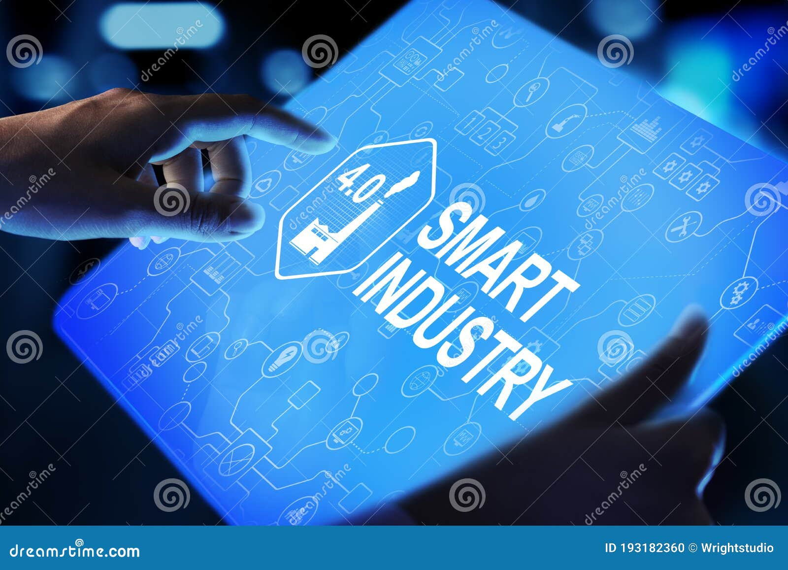

Nosotros
Breve historia de la empresa
CHG CONTROL & SYSTEMS comenzó como un sueño de innovación y mejora en el sector industrial. Fundada en 2018, nuestra motivación fue brindar soluciones tecnológicas que transformaran la productividad y seguridad de nuestros clientes. A lo largo de los años, hemos crecido gracias a la confianza de nuestros clientes y la pasión de nuestro equipo.
Misión
Brindar soluciones innovadoras en automatización industrial, seguridad electrónica y mantenimiento, mejorando la productividad y seguridad de nuestros clientes.
Visión
Ser líder en el sector de la automatización industrial, ofreciendo productos y servicios de la más alta calidad.
¿Qué hacemos?
- Automatización industrial: Implementamos soluciones tecnológicas avanzadas para optimizar la eficiencia y control en procesos industriales.
- Sistemas de cámaras de seguridad: Proveemos soluciones de vigilancia para garantizar la seguridad de tu empresa o negocio.
- Sistemas de extinción de incendios: Ofrecemos equipos de alta calidad para la protección de tu empresa en caso de emergencias.
Nuestro equipo
Christian H. Gahona
Fundador y Director General. Experto en automatización industrial con más de 15 años de experiencia.
María Hernández
Directora de Seguridad Electrónica. Especialista en sistemas de vigilancia y protección.
Juan Pérez
Ingeniero de Mantenimiento. Responsable de proyectos de extinción de incendios y soporte técnico.
Equipo CHG CONTROL & SYSTEMS
Foto grupal del equipo profesional que impulsa la innovación y el servicio de calidad.
Nuestros valores y filosofía
- Innovación: Siempre estamos a la vanguardia en las tecnologías que implementamos.
- Compromiso: Nos comprometemos con la satisfacción y seguridad de nuestros clientes.
- Responsabilidad: Garantizamos un servicio confiable y de alta calidad.
Certificaciones y logros
- ISO 9001:2015 en gestión de calidad.
- Premio a la Innovación Industrial 2024.
- Proyectos destacados con empresas líderes del sector.
Ubicación
Jr. Ramon Herrera 387, Lima 15081.
Teléfono: +51 917047436
Testimonios de clientes
"Gracias a CHG CONTROL & SYSTEMS, nuestra planta está funcionando de manera más eficiente que nunca. La automatización industrial ha sido una gran inversión." — Juan Pérez, CEO de Empresa X
¿Estás listo para optimizar tu negocio?
¡Contáctanos ahora y solicita una cotización personalizada!
Servicios y Equipos
Equipos de uso general
- Analizadores de Redes
- Cámaras termográficas
- Megóhmetros
- Multímetros
- Pinzas amperimétricas
- Pinzas vatimétricas
- Pinzas corriente de fuga
- Pinzas fotovoltaicas
- Secuencímetros
- Termómetros infrarrojos
- Probadores de instalaciones eléctricas de BT
- Probadores de diferenciales
- Termoetiquetas
- Tacómetros
- Vibrómetros
Equipos para aplicación de pruebas de puesta a tierra
- Telurómetros
- Medidores de tensión de toque y paso
- Software para diseño de puesta a tierra
- Medidor de integridad de mallas
Equipos para pruebas en interruptores
- Micro-ohmímetros para resistencia de contacto
- Analizadores / Probadores de interruptores
- Probadores de botellas de vacío
- Fuentes de inyección primaria de alta corriente
Equipos para aplicación ambiental
- Luxómetros
- Termohigrómetros
- Anemómetros
- Medidores de campo eléctrico y/o magnético
- Registradores de termocupla
- Pararrayos de BT
Equipos para pruebas en transformadores
- Medidores de relación de transformación
- Micro-ohmímetros para medición de resistencia de bobinas
- Equipos de pruebas de transformadores de corriente y tensión
- Espinterómetros y/o medición de tangente delta de aceite dieléctrico
- Probadores de capacitancia y tangente delta
- Prueba de barrido de frecuencia
- Monitores de temperatura de aceite y devanado
- Monitores analizadores de gases disueltos en aceites (DGA)
- Máquinas de tratamiento de aceite
- Medidores portátiles de humedad y temperatura en aceite
- Analizadores de transformadores
- Medidores de punto de rocío
Maletas de pruebas y multifunción
- Equipos multifunción para pruebas en subestaciones
- Maletas de pruebas de relés de protección
- Probadores y/o analizadores de pararrayos
- Detector y/o analizador de fuga de gas SF6
- Probadores o sistemas de monitoreo de banco de baterías
- Probadores de motores
- Probadores de tableros de BT
- Probadores de instalaciones fotovoltaicas
- Probadores para aplicación médica
- Comprobadores de vehículos eléctricos
Probadores de equipos de seguridad
- Infladores de guantes
- Probadores de guantes
- Probadores de pértigas aisladas
- Probadores de soga
Equipos para pruebas en cables BT/MT/AT
- Hipots AC/DC/VLF
- Localizadores y rastreadores de cables
- Localizadores de fallas en cables
- Reflectómetros
Medidor de descargas parciales (DP) online
- Medidores de ultrasonido, TEV, UHF
- Medidores de DP en activos al exterior
- Cámaras de detección de efecto corona
- Cámaras acústicas de ultrasonido
- Medidores de DP en celdas
- Medidores de DP en cables
- Monitor de DP en transformadores, generadores, GIS y cables
Equipos para medidores y pérdidas
- Equipos de prueba y contrastación de medidores
- Mesas o bancos de contrastación de medidores
- Verificadores de medidores
- Monitores de corriente de fuga / diferencial
- Analizadores de redes fijos
Equipos en redes aéreas MT/AT
- Kilovoltímetros digitales MT/AT
- Pinzas amperimétricas MT/AT
- Secuencímetros en MT
- Medidor de altura de cables
- Loadbuster (cámaras de extinción de arco)
- Indicadores de fallas
- Probadores de aisladores
Equipos de construcción civil
- Medidores de distancia láser
- Niveles láser
- Niveles de Burbuja
Equipos para aplicación en laboratorio y educación
- Osciloscopio
- Calibradores multifunción
- Generadores de funciones
- Kilovoltímetros de banco
- Patrones de resistencia
- Caja de década de resistencia
- Hipots AC
Condensadores / capacitores de MT
- Suministro de bancos fijos, automáticos (Capacitores de MT)
- Medidores de capacitancia para condensadores de MT
Equipos de seguridad eléctrica y de maniobra
- Guantes y mangas dieléctricas
- Detectores de presencia de tensión / detectores de ausencia de tensión
- Caretas y capuchas contra arco eléctrico
- Abrazaderas a prueba de cortocircuito
- Trajes contra arco eléctrico
- Pértigas de maniobra y de rescate
- Aterramientos
- Botas y sobrebotas dieléctricas
- Mantas aislantes y pisos dieléctricos
- Banquetas dieléctricas
- Equipos de seguridad para líneas energizadas
Herramientas
- Herramientas aisladas a 1000V
- Herramientas sin aislamiento
- Maletas y bolsos porta herramientas
- Herramientas para electrónica
Alicates
- Alicates universales y multifunción
- Alicates en punta
- Alicates y herramientas pelacables
- Alicate de corte
- Alicate prensa terminales
- Alicate de presión
- Alicates para anillos segger
- Alicates especiales
Destornilladores
- Destornillador
- KIT DE DESTORNILLADORES
Surtido de herramientas
- Maletas
- Bolsos
- Kit de herramientas
Herramientas hidráulicas y a batería
- Prensas terminales
- Cortadora de cables
- Herramientas perforadoras (hidráulicas y a batería)
- Herramientas para sector ferroviario